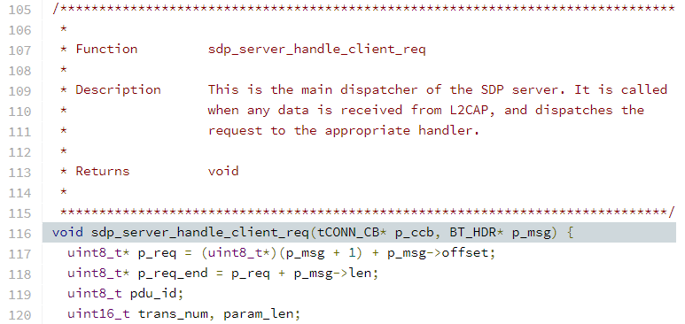
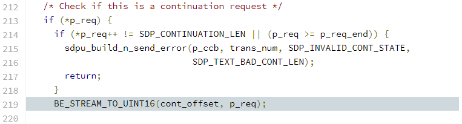

BlueBorne 之 CVE-2017-0785 原理分析
Sourcell@海特实验室
CVE-2017-0785 属于 BlueBorne 漏洞集。导致该漏洞的原因是 Android BlueDroid 和 Fluoride 蓝牙协议栈实现的 SDP server 没有正确处理 continuation state。攻击者可以利用它泄露 Android 栈上的内存信息，然后绕过 ASLR。
本文将基于标签为 android-8.0.0_r1 的 AOSP Fluoride 蓝牙协议栈分析该漏洞。
背景知识¶
SDP 简介¶
SDP (Service Discovery Protocol) 是经典蓝牙中的高层协议，使用 C/S 架构。它定义了 client 如何发现 server 提供的服务：

上图中的关键点是，client 必须等待 server 响应当前的 request PDU 后，才能发送下一个 request PDU。Request PDU 会携带限制 response PDU 返回数据大小的字段，比如 MaximumAttributeByteCount：
Bluetooth SDP Protocol
PDU: Service Search Attribute Request (0x06)
Transaction Id: 0x0000
Parameter Length: 15
Service Search Pattern: Public Browse Group
Maximum Attribute Byte Count: 65535
Attribute ID List
Continuation State: no (00)
Response PDU 也会携带相应的字段表示自己返回数据的长度，比如 AttributeListsByteCount：
Bluetooth SDP Protocol
PDU: Service Search Attribute Response (0x07)
Transaction Id: 0x0000
Parameter Length: 667
Attribute List Byte Count: 662
Data Fragment
Continuation State: yes (02 96)
Continuation State Length: 2
Continuation State Value
Continuation State 简介¶
上一节提到的 AttributeListsByteCount 不能比 MaximumAttributeByteCount 大。一旦 server 发现 client 请求的数据在一个 response PDU 中放不下，就会把数据分段，并使用 SDP 定义的 continuation state 完成所有分段的传输。每个数据段的大小不一定把 MaximumAttributeByteCount 用完，server 可自行决定分段大小。比如在上面的 response PDU 中分段大小为 662 字节，远小于 MaximumAttributeByteCount 定义的最大值 65535。
传输分段数据的 response PDU 必须携带 ContinuationState 字段。该字段由两部分组成。其中 InfoLength 表示 continuation information 的长度，且最大值为 0x10：
+------------+--------------------------+
| InfoLength | Continuation Information |
+------------+--------------------------+
Continuation information 则是一个很神奇的字段，因为蓝牙核心规范并没有为它定义具体的含义，只要求该字段能解决分段传输的问题即可。具体的情形是，client 收到携带分段数据的 response PDU 后，会把其中的 ContinuationState 拿出来，放到下一个 request PDU 中发回给 server。然后 server 根据收到的 ContinuationState 确定下一个应传输的数据分段（这与 cookie 有异曲同工之妙），如此往复直到所有分段都传输完毕（传输最后一个分段的 response PDU 不使能 continuation state）。
L2CAP 导致的数据分段¶
在大多数实际场景中，并不是上一节阐述的原因导致了数据分段。比如当 SDP server 返回的数据总和 (1343 bytes) 远小于 MaximumAttributeByteCount 设置的 65535 时，也会有数据分段：

这是因为 L2CAP (Logical Link Control and Adaptation Protocol) 的限制。L2CAP 承载了 SDP PDU 的传输，在 L2CAP 连接建立后，两端的设备会交换各自接收数据时支持的 MTU (Maximum Transmission Unit)：
Device A -> Device B
Bluetooth L2CAP Protocol
Length: 12
CID: L2CAP Signaling Channel (0x0001)
Command: Configure Request
Command Code: Configure Request (0x04)
Command Identifier: 0x04
Command Length: 8
Destination CID: Dynamically Allocated Channel (0x0040)
0000 0000 0000 000. = Reserved: 0x0000
.... .... .... ...0 = Continuation Flag: False
Option: MTU
Type: Maximum Transmission Unit (0x01)
Length: 2
MTU: 1024
Device B -> Device A
Bluetooth L2CAP Protocol
Length: 14
CID: L2CAP Signaling Channel (0x0001)
Command: Configure Response
Command Code: Configure Response (0x05)
Command Identifier: 0x04
Command Length: 10
Source CID: Dynamically Allocated Channel (0x0040)
0000 0000 0000 000. = Reserved: 0x0000
.... .... .... ...0 = Continuation Flag: False
Result: Success (0x0000)
Option: MTU
Type: Maximum Transmission Unit (0x01)
Length: 2
MTU: 1024
当 SDP server 发现填入 SDP response PDU 的数据长度超过远端设备 L2CAP 设置的 MTU 时，就会使能 continuation state 把数据分段传输。
Android 定义的 Continuation Information¶
前面说明了蓝牙核心规范并没有定义 continuation information 的具体含义是什么，于是 Android 对该字段的定义如下：

cont_offset 的具体含义有两种：
- 当使用
SDP_SERVICE_SEARCH_REQ/RSPPDU 时，cont_offset表示下一个分段中起始数据项相对不分段完整数据项的偏移。
这里的数据项具体指的是 service record handle。比如 server 总共要返回 100 个 service record handle，第一次返回了 10 个，那么 cont_offset 就为 10。也可以把这个偏移理解为当前已经传输的数据项总和或是后续传输的第一个数据项在完整数据项中的索引。
- 当使用
SDP_SERVICE_ATTR_REQ/RSP或SDP_SERVICE_SEARCH_ATTR_REQ/RSP时，cont_offset表示下一个分段的数据相对不分段完整数据的偏移。
这和上面一种情况类似，只不过 offset 的单位由一条数据项变为了字节。当然也可以理解为已经传输的分段数据大小总和。比如下面传输第一个分段数据的 response PDU，其中 cont_offset 为 02 96，即 662，正好等于 AttributeListsByteCount 中的 662。

Client 只要在后续的 request PDU 中回传 cont_offset，server 就能找到对应 response PDU 应携带分段数据的起始位置，从而继续传输分段数据。这满足了蓝牙核心规范解决分段传输问题的要求。
漏洞分析¶
Android 实现的 SDP server 在处理 request PDU 时会进入 sdp_server_handle_client_req()：

该函数会根据 PDU ID 判断当前 request PDU 的类型。当 request PDU 为 SDP_SERVICE_SEARCH_REQ PDU 时，进入 process_service_search() 做进一步处理：

处理函数会依次提取 SDP_SERVICE_SEARCH_REQ PDU 携带的三个参数：
- 提取
ServiceSearchPattern至uid_seq

- 提取
MaximumServiceRecordCount至max_replies

- 提取
ContinuationState至cont_offset

若当前处理的 request PDU 使能了 continuation state，SDP server 就会提取其中的 continuation information 字段，并存入 cont_offset。紧接着 Android 还会对 cont_offset 做安全检查，比较它与先前传给 SDP client 的值是否相等，防止攻击者恶意设置 offset 导致数组越界：

在得到 uid_seq 与 max_replies 后，SDP server 会找到所有与 uid_seq 匹配的 service record handle，并把它们存储在 rsp_handles 数组中。这些 handle 就是 client 请求的数据。max_replies 则用于限制这些 handle 的总数 num_rsp_handles（漏洞点），避免返回的 handle 数量超过 MaximumServiceRecordCount 的限制：

对于每一个请求，num_rsp_handles 都会被重新计算一次。这种做法对不使用 continuation state 的请求是合理的，因为若 uid_seq 和 max_replies 不同，num_rsp_handles 也可能不同。但是当请求使用 continuation state 时，所有上下文相同的请求都应使用同样的 uid_seq 和 max_replies，那么 num_rsp_handles 不会改变，因此没必要再重新计算。如果重新计算，就应检查每次计算得到的 num_rsp_handles 是否相同。若不相同，则说明出现了异常流量，需要报错处理。但 AOSP 并没有做这种检查。
于是攻击者可以利用 max_replies 对 num_rsp_handles 的限制，使它的值在一个 continuation state 上下文中发生变化。比如先发送普通的 SDP_SERVICE_SEARCH_REQ PDU，正常触发 continuation state 机制（为了增加触发 continuation state 的概率，可以配置一个很小的 L2CAP MTU），然后发送 MaximumServiceRecordCount 为 1 的 continuation state PDU，就会导致 num_rsp_handles 的值为 1。
在 num_rsp_handles 值为 1 的情况下继续跟踪代码。当 continuation state 使能时，SDP server 会使用 num_rsp_handles 减去 cont_offset（已经传输的数量），从而得到剩余需要传输的 handle 数量 rem_handles。由于 num_rsp_handles 被攻击者篡改为了 1，且 rem_handles 的类型为 uint16_t，所以 rem_handles 发生 underflow：

接下来 SDP server 会根据远端设备 L2CAP 配置的 MTU 计算当前 SDP_SERVICE_SEARCH_RSP PDU 中最多能携带的 handle 数量 cur_handles。显然下溢的 rem_handles 总是大于 cur_handles，导致 continuation state 恒使能：

之后 SDP server 会把位于 cont_offset 到 cont_offset + cur_handles 之间的 handle 写入 SDP_SERVICE_SEARCH_RSP PDU。由于持续的 continuation state，会导致 cont_offset 不断增大，所以如下循环中的 rsp_handles[xx] 必然会发生越界读，最终导致内存泄露：

References¶
- Service Discovery Protocol (SDP) Specification, BLUETOOTH CORE SPECIFICATION Version 5.2 | Vol 3, Part B page 1206
- BlueBorne Technical White Paper